1과목: 응용역학
1. 다음 그림과 같은 캔틸레버보에 휨모멘트 하중M이 작용할 경우 최대처짐 δmax 의 값은? (단, 보의 휨강성은 EI 임)
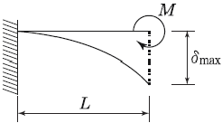
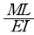
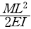
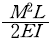
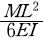
2. 단면이 10cm×20cm인 장주가 있다. 그 길이가 3m일 때 이 기둥의 좌굴하중은 약 얼마인가? (단, 기둥의 E=2×105kg/cm2, 지지상태는 일단 고정, 타단 자유이다.)
3. 아래 그림과 같은 정정 라멘에 분포하중 w가 작용할 때 최대 모멘트를 구하면?
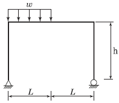
4. 그림과 같은 하중을 받는 보의 최대 전단응력은?
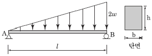
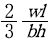
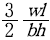
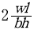
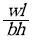
5. 정정 구조물에 비해 부정정 구조물이 갖는 장점을 설명한 것 중 틀린 것은?
6. 반지름이 25cm인 원형단면을 가지는 단주에서 핵의 면적은 약 얼마인가?
7. 단면 2차 모멘트의 특성에 대한 설명으로 틀린 것은?
8. 단면이 원형(반지름 R)인 보에 휨모멘트 M 이 작용할 때 이 보에 작용하는 최대휨응력은?
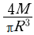
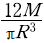
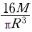
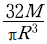
9. 다음 그림에 표시된 힘들의 x 방향의 합력은 약 얼마인가?
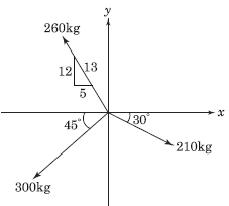
10. 체적탄성계수 K 를 탄성계수 E 와 프와송비 v로 옳게 표시한 것은?
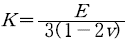
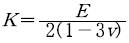
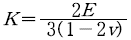
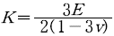
11. 그림과 같은 트러스에서 부재 U 의 부재력은?
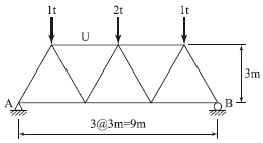
12. 그림과 같은 라멘 구조물의 E 점에서의 불균형 모멘트에 대한 부재 EA 의 모멘트 분배율은?
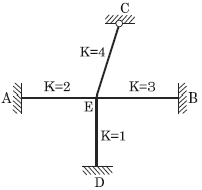
13. 다음의 2부재로 된 TRUSS계의 변형에너지 U 를 구하면 얼마인가? (단, ( )안의 값은 외력 P 에 의한 부재력이고, 부재의 축강성 AE 는 일정하다.)
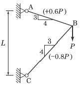
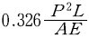
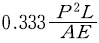
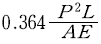
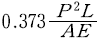
14. 아래 그림과 같은 보의 중앙점 C 의 전단력의 값은?
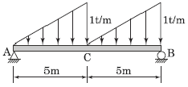
15. 다음 부정정보의 B 지점에 침하가 발생하였다. 발생된 침하량이 1cm라면 이로 인한 B 지점의 모멘트는 얼마인가? (단, EI=1×106 kgㆍcm2 )
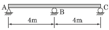
16. 중공 원형 강봉에 비틀림력 T 가 작용할 때 최대 전단 변형을 γmax =750 ×10-6 rad으로 측정되었다. 봉의 내경은 60mm이고 외경은 75mm일 때 봉에 작용하는 비틀림력 T 를 구하면? (단, 전단탄성계수 G=8.15×105 kg/cm2)
17. 다음 구조물에서 하중이 작용하는 위치에서 일어나는 처짐의 크기는?
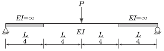
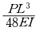
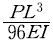
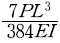
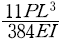
18. 아래 그림과 같은 내민보에서 D 점의 휨 모멘트 MD 는 얼마인가?
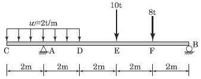
19. 그림과 같은 단면에서 외곽 원의 직경 (D)이 60cm이고 내부 원의 직경 (D/2)은 30cm라면, 빗금 친 부분의 도심의 위치는 x 축에서 얼마나 떨어진 곳인가?
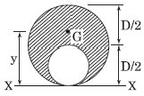
20. 그림과 같은 트러스의 C 점에 300kg의 하중이 작용할 때 C 점에서의 처짐을 계산하면? (단, E=2×106 kg/cm2, 단면적=1cm2)
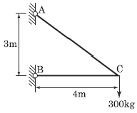
2과목: 측량학
21. 수심이 h 인 하천의 평균 유속을 구하기 위하여 수면으로부터 0.2h, 0.6h, 0.8h가 되는 깊이에서 유속을 측량한 결과 초당 0.8m, 1.5m, 1.0m이었다. 3점법에 의한 평균 유속은?
22. 직사각형 두 변의 길이를 1/200 정확도로 관측하여 면적을 구할 때 산출된 면적의 정확도는?
23. 190km/h인 항공기에서 초점거리 153mm인 카메라로 시가지를 촬영한 항공사진이 있다. 사진 상에서 허용흔 들림량 0.01mm, 최장 노출시간 1/250초, 사진크기 23cm×23cm일 때, 연직점으로부터 7cm 떨어진 위치에 있는 건물의 실제 높이가 120m라면 이 건물의 기복변위는?
24. 직접고저측량을 실시한 결과가 그림과 같을 때, A 점의 표고가 10m라면 C 점의 표고는? (단, 그림은 개략도로 실제 치수와 다를 수 있음.) [단위 : m]
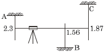
25. 항공 LiDAR 자료의 활용 분야로 틀린 것은?
26. 곡선반지름 R , 교각 I 인 단곡선을 설치할 때 사용되는 공식으로 틀린 것은?
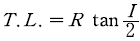
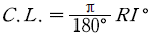
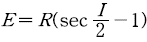
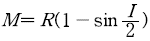
27. 지구 표면의 거리 35km 까지를 평면으로 간주했다면 허용정밀도는 약 얼마인가? (단, 지구의 반지름은 6,370 km 이다.)
28. 도로의 종단곡선으로 주로 사용되는 곡선은?
29. 축척 1:25000의 수치지형도에서 경사가 10%인 등경사 지형의 주곡선간 도상거리는?
30. 트레버스측량에서 관측값의 계산은 편리하나 한번 오차가 생기면 그 영향이 끝까지 미치는 각관측 방법은?
31. 수준망의 관측 결과가 표와 같을 때, 정확도가 가장 높은 것은?
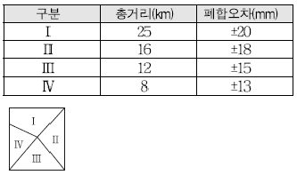
32. 축척 1:5000 수치지형도의 주곡선 간격으로 옳은 것은?
33. 좌표를 알고 있는 기지점에 고정용 수신기를 설치하여 보정자료를 생성하고 동시에 미지점에 또 다른 수신기를 설치하여 고정점에서 생성된 보정자료를 이용해 미지점의 관측자료를 보정함으로써 높은 정확도를 확보 하는 GPS측위 방법은?
34. 노선측량에서 실시설계측량에 해당하지 않는 것은?
35. 초점거리 210mm인 카메라를 사용하여 사진크기 18cm×18cm로 평탄한 지역을 촬영한 항공사진에서 주점 기선장이 70mm 이었다. 이 항공사진의 축척이 1: 20000 이었다면 비고 200m에 대한 시차차는?
36. 축척에 대한 설명 중 옳은 것은?
37. 다음 중 지상기준점 측량 방법으로 틀린 것은?
38. 다음 중 물리학적 측지학에 해당되는 것은?
39. 그림에서 두 각이 ∠AOB=15°32' 18.9''±5'' , ∠BOC=67°17' 45''±15'' 로 표시될 때 두 각의 합 ∠AOC 는?
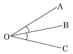
40. 2,000m의 거리를 50m씩 끊어서 40회 관측하였다. 관측결과 오차가 ±0.14m이었고, 40회 관측의 정밀도가 동일하다면, 50m 거리 관측의 오차는?
3과목: 수리학 및 수문학
41. 유속분포의 방정식이 v=2y1/2 로 표시될 때 경계면에서 0.5m인 점에서의 속도 경사는? (단, y : 경계면으로부터의 거리)
42. 단위중량 w 또는 밀도 ρ 인 유체가 유속 V 로서 수평방향으로 흐르고 있다. 직경 d , 길이 l 인 원주가 유체의 흐름방향에 직각으로 중심축을 가지고 놓였을 때 원주에 작용하는 항력 (D) 은? (단, C : 항력계수, g : 중력가속도)
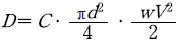
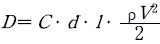
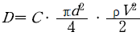
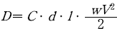
43. 상대조도(相對粗度)를 바르게 설명한 것은?
44. 직사각형 단면의 수로에서 단위폭당 유량이 0.4m3/s/m 이고 수심이 0.8m일 때 비에너지는? (단, 에너지 보정계수는 1.0으로 함.)
45. 그림과 같이 d1=1 m인 원통형 수조의 측벽에 내경 d2=10 cm의 관으로 송수할 때의 평균 유속 (V2)이 2m/s 이었다면 이때의 유량 Q 와 수조의 수면이 강하하는 유속 V1 은?
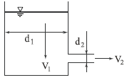
46. Bernoulli의 정리로서 가장 옳은 것은?
47. 지하수의 유속에 대한 설명으로 옳은 것은?
48. 물의 순환에 대한 다음 수문 사항 중 성립이 되지 않는 것은?
49. 물이 하상의 돌출부를 통과할 경우 비에너지와 비력의 변화는?
50. 다음 중 합성 단위유량도를 작성할 때 필요한 자료는?
51. 그림과 같이 기하학적으로 유사한 대 ㆍ 소(大小)원형 오리피스의 비가 n =D/d=H/h 인 경우에 두 오리피스의 유속, 축류단면, 유량의 비로 옳은 것은? (단, 유속계 수 Cv , 수축계수 Ca는 대ㆍ소 오리피스가 같다.)
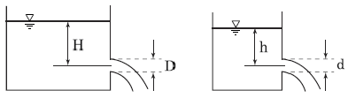
52. 누가우량곡선(rainfall mass curve)의 특성으로 옳은 것은?
53. 관내에 유속 v로 물이 흐르고 있을 때 밸브의 급격한 폐쇄 등에 의하여 유속이 줄어들면 이에 따라 관내에 압력의 변화가 생기는데 이것을 무엇이라 하는가?
54. 수문곡선에서 시간매개변수에 대한 정의 중 틀린 것은?
55. 지하수의 투수계수와 관계가 없는 것은?
56. 경심이 8m, 동수경사가 1/100, 마찰손실계수 f=0.03일 때 Chezy의 유속계수 C 를 구한 값은?
57. Manning의 조도계수 n에 대한 설명으로 옳지 않은 것은?
58. 자연하천의 특성을 표현할 때 이용되는 하상계수에 대한 설명으로 옳은 것은?
59. 그림에서 h=25cm, H=40cm 이다. A , B 점의 압력차는?
60. 삼각 위어(weir)에 월류 수심을 측정할 때 2%의 오차가 있었다면 유량 산정시 발생하는 오차는?
4과목: 철근콘크리트 및 강구조
61. 그림은 복철근 직사각형 단면의 변형률이다. 다음중 압축철근이 항복하기 위한 조건으로 옳은 것은?
62. 단철근 직사각형 균형보에서 fy=400MPa, d=700mm 일 때 압축연단에서 중립축까지의 거리(c)는?
63. fck=35MPa, fy=350MPa을 사용하고 bw=500mm, d=1,000mm인 휨을 받는 직사각형 단면에 요구되는 최소 휨철근량은 얼마인가?
64. PS콘크리트의 강도개념(strength concept)을 설명한 것으로 가장 적당한 것은?
65. 프리스트레스트 콘크리트 중 비부착긴장재를 가진 부재에서 깊이에 대한 경간의 비가 35 이하인 경우 공칭강도를 발휘할 때 긴장재의 인장응력 (fps)을 구하는 식으로 옳은 것은? (단, fpe : 긴장재의 유효프리스트레스, ρp : 긴장재의 비)
66. 강도 설계법에서 사용성 검토에 해당하지 않는 사항은?
67. 그림과 같은 띠철근 기둥에서 띠철근의 최대 간격으로 적당한 것은? (단, D10의 공칭직격은 9.5mm, D32의 공칭직경은 31.8mm)
68. 보의 길이 l=20m, 활동량 Δl=4mm, Ep=200,000MPa일 때 프리스트레스 감소량 Δfp=는? (단, 일단 정착임.)
69. bw=350mm, d=600mm인 단철근 직사각형보에서 콘크리트가 부담할 수 있는 공칭 전단 강도를 정밀식으로 구하면? (단, Vu=100kN, Mu=300kN·m, ρw=0.016, f ck=24MPa)
70. 그림에 나타난 이등변삼각형 단철근보의 공칭 휨강도 Mn 를 계산하면? (단, 철근 D19 3본의 단면적은 860mm2, fck=28MPa, fy =350MPa이다.)
71. 길이 6m의 철근콘크리트 캔틸레버보의 처짐을 계산하지 않아도 되는 보의 최소두께는 얼마인가? (단, f ck=21MPa, f y=350MPa)
72. 비틀림에 저항하는 유효단면의 보가 슬래브와 일체로 되거나 완전한 합성구조로 되어 있을 때 '비틀림 단면'에 대한 설명으로 옳은 것은?
73. 아래 그림과 같은 단면을 가지는 직사각형 단철근보의 설계휨강도를 구할 때 사용되는 강도감소계수 φ값은 약 얼마인가? (단, As는 3176mm2, fck=38MPa, fy=400MPa)
74. 그림과 같은 용접부의 응력은?
75. 단철근 직사각형보에서 부재축에 직각인 전단 보강 철근이 부담해야 할 전단력 Vs가 350kN이라 할 때 전단 보강 철근의 간격 s는 얼마 이하이어야 하는가? (단, Av=253mm2, fy=400MPa, fck=28MPa, bw=300mm, d=600mm)
76. 확대머리 이형철근의 인장에 대한 정착길이는 아래의 표와 같은 식으로 구할 수 있다. 여기서, 이 식을 적용하기 위해 만족하여야 할 조건에 대한 설명으로 틀린 것은?(오류 신고가 접수된 문제입니다. 반드시 정답과 해설을 확인하시기 바랍니다.)
77. 그림과 같은 리벳 연결에서 리벳의 허용력은? (단, 리벳 지름은 12mm이며, 리벳의 허용전단응력은 200MPa, 허용지압응력은 400MPa이다.)
78. 2방향 슬래브의 직접설계법을 적용하기 위한 제한 사항으로 틀린 것은?
79. 보의 유효깊이(d) 600mm, 복부의 폭( bw) 320mm, 플랜지의 두께 130mm, 인장철근량 7650mm2, 양쪽 슬래브의 중심간 거리 2.5m, 경간 10.4m, fck=25MPa, fy=400MPa로 설계된 대칭 T형보가 있다. 이 보의 등가 직사각형 응력 블록의 깊이(a)는?
80. 1방향 철근콘크리트 슬래브에서 수축ㆍ온도 철근의 간격에 대한 설명으로 옳은 것은?
5과목: 토질 및 기초
81. 그림과 같이 3층으로 되어 있는 성층토의 수평방향의 평균투수계수는?
82. 점착력이 0.1kg/cm2, 내부마찰각이 30°인 흙에 수직응력 20kg/cm2를 가할 경우 전단응력은?
83. 입경가적곡선에서 가적통과율 30%에 해당하는 입경이 D30=1.2mm일 때, 다음 설명 중 옳은 것은?
84. 도로의 평판재하시험을 끝낼 수 있는 조건이 아닌 것은?
85. 실내시험에 의한 점토의 강도증가율(cu/p) 산정 방법이 아닌 것은?
86. 무게 300kg의 드롭햄머로 3m 높이에서 말뚝을 타입할 때 1회 타격당 최종 침하량이 1.5cm 발생하였다. Sander 공식을 이용하여 산정한 말뚝의 허용지지력은?
87. 함수비 18%의 흙 500kg을 함수비 24%로 만들려고 한다. 추가해야 하는 물의 양은?
88. 그림의 유선망에 대한 설명 중 틀린 것은?(단, 흙의 투수계수는 2.5×10-3cm/s이다.)
89. 다음 그림과 같은 Sampler에서 면적비는 얼마인가?
90. γt =1.8t/m3, cu =3.0t/m2, φ =0°의 점토지반을 수평면과 50°의 기울기로 굴착하려고 한다. 안전율을 2.0으로 가정하여 평면활동 이론에 의해 굴착깊이를 결정하면?
91. 점성토 시료를 교란시켜 재성형을 한 경우 시간이 지남에 따라 강도가 증가하는 현상을 나타내는 용어는?
92. 현장에서 다짐된 사질토의 상대다짐도가 95%이고 최대 및 최소 건조단위중량이 각각 1.76t/m3, 1.5t/m3이라고 할 때 현장시료의 상대밀도는?
93. 두 개의 기둥하중 Q1=30 t , Q2=20 t 을 받기 위한 사다리꼴 기초의 폭 B1, B2 를 구하면?(단, 지반의 허용지지력 qa = 2t/m2)
94. 2m×3m 크기의 직사각형 기초에 6t/m2의 등분포하중이 작용할 때 기초 아래 10m 되는 깊이에서의 응력증가량을 2 : 1 분포법으로 구한 값은?
95. 4m×4m인 정사각형 기초를 내부마찰각 φ=20° , 점착력 c= 3t/m2인 지반에 설치하였다. 흙의 단위중량 γ= 1.9t/m3이고 안전율이 3일 때 기초의 허용하중은? (단, 기초의 깊이는 1m이고, Nq= 7.44, Nγ=4.97, Nc= 17.69 이다.)
96. 다음 중 사운딩 시험이 아닌 것은?
97. 활동면위의 흙을 몇 개의 연직 평행한 절편으로 나누어 사면의 안정을 해석하는 방법이 아닌 것은?
98. 접지압(또는 지반반력)이 다음 그림과 같이 되는 경우는?
99. 두께 2cm인 점토시료의 압밀시험결과 전 압밀량의 90%에 도달하는데 1시간이 걸렸다. 만일 같은 조건에서 같은 점토로 이루어진 2m의 토층위에 구조물을 축조한 경우 최종침하량의 90%에 도달하는데 걸리는 시간은?
100. 그림과 같은 옹벽배면에 작용하는 토압의 크기를 Rankine의 토압공식으로 구하면?
6과목: 상하수도공학
101. 펌프의 비속도(비교회전도, Ns)에 대한 설명으로 서 옳은 것은?
102. 그래프는 어떤 하천의 자정작용을 나타낸 용존산소 부족곡선이다. 다음 중 어떤 물질이 하천으로 유입 되었다고 보는 것이 가장 타당한가?
103. 급수방식에 대한 설명으로서 틀린 것은?
104. 하수관의 접합방법에 관한 설명 중 틀린 것은?
1⑤. 어떤 하수의 5일 BOD 농도가 300mg/L, 탈산소계수(상용 대수)값이 0.2 day-1일 때 최종 BOD 농도는?
106. 도수 및 송수노선 선정 시 고려할 사항으로 틀린 것은?
107. 펌프의 공동현상(cavitation)에 대한 설명으로서 틀린 것은?
108. 하수관거의 배제방식에 대한 설명으로서 틀린 것은?
109. 저수시설의 유효저수량 산정에 이용되는 방법은?
110. 하수처리장의 처리수량은 10000m3/day, 제거되는 SS농도는 200mg/L 이다. 잉여 슬러지의 함수율이 98%일 경우에 잉여슬러지 건조중량과 잉여슬러지의 총 발생량은? (단, 잉여슬러지의 비중은 1.02 이다.)
111. MLSS농도 3000mg/L의 혼합액을 1L 메스실린더에 취해 30분간 정치했을 때 침강 슬러지가 차지하는 용적이 440mL이었다면 이 슬러지의 슬러지 밀도지수(SDI)는?
112. 인구 200,000명인 도시에서 1인당 하루 300L를 급수할 경우, 급속여과지의 표면적은? (단, 여과속도는 150m/day 이다.)
113. 상수 원수 중 색도가 높은 경우의 유효한 처리방법으로 가장 거리가 먼 것은?
114. 상수도의 도수, 취수, 송수, 정수시설의 용량산정에 기준이 되는 수량은?
115. 호기성 처리방법에 비해 혐기성 처리방법이 갖고 있는 특징에 대한 설명으로서 틀린 것은?
116. 계획오수량을 결정하는 방법에 대한 설명으로서 틀린 것은?
117. 물의 흐름을 원활히 하고 관로의 수압을 조절할 목적으로 수로의 분기, 합류 및 관수로로 변하는 곳에 설치하는 것은?
118. 해수 담수화를 위한 적용 방식으로서 가장 거리가 먼 것은?
119. 염소소독을 위한 염소투입량 시험결과가 그림과 같다. 결합염소(클로라민류)가 분해되는 구간과 파괴점(break point)으로 옳은 것은?
120. 정수시설의 응집용 약품에 대한 설명으로서 틀린 것은?